原文连接:https://www.cnblogs.com/quellanan/p/11613109.html
前言
啊啊啊~~~ ,经过差不多两天的持续摸索优化，个人博客算是初步完成了，现在自己看的效果还是非常不错的。这篇文章就是讲我怎么搭建一个这样的博客的。早在17年的时候就用hexo 结合github搭建过个人博客，但是那时候还太年轻，也没有维护，后面就废掉了。18年的时候又一时兴起搭建了一个。比17年的时候好看些，但是没有什么访问量，可能没有做seo 优化，也没有维护多长时间就放着了，前几天上去看，界面显示都还正常，就是内容太幼稚了。所以时隔一年，我胡汉三又回来了。痛下决心，把整体的博客都搭建好了，包含界面渲染，RSS,评论系统，站内搜索，seo 优化等等。现在让我们开始吧。
博客传送门：
coding:http://quellanan.coding.me/
github:https://quellanan.github.io/
最终效果
我们先来看看效果吧，这样对你们可能更有吸引力，更有动力搭建一个属于自己的bolg 啦。
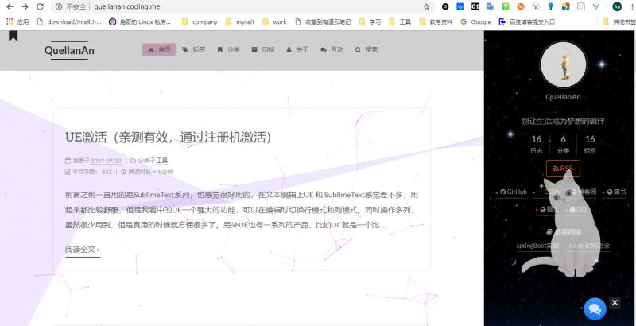
主页面是这样的，包含首页、标签、分类、归档、关于、互动、搜索、还有右侧的主页。
最喜欢标签这一页，可以看出整个网站对哪一类的文章写的比较多。
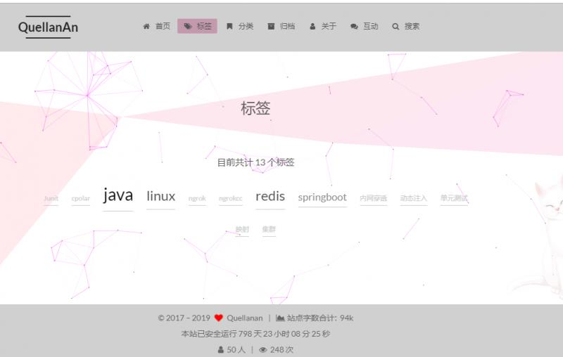
还可以通过标签找到对应的文章。还有就就是页脚的网站统计，页面访问人数和访问量的统计。已经整个站点博文的字数。这些相信都是自建博主们最关心的。我也是最关心这部分哈哈，毕竟访问量和人数上去了就有持续更新的动力啦。

打赏功能，已经版权申明，还有侧边的文章目录也是超赞的。
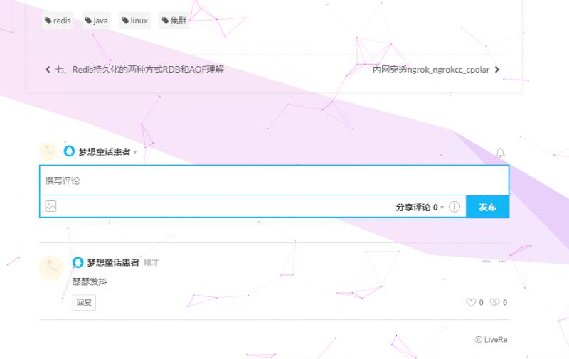
评论功能，这个评论也是很给力的吧，增加了博主和读者之间的交流。和评论类似还有一个，就是网站右下角那个类似微信图标的那个，那个也是可以直接和博主沟通的哟，不赖吧。这些只是网站的一部分功能，其他的就不说了，开始动手吧
环境准备
- 安装git：
https://git-scm.com/book/zh/v2/起步-安装-Git
安装git 之后又配置用户名和邮箱，和github 一致
#全局配置用户名
git config --global user.name "nameVal"
#全局配置邮箱
git config --global user.email "eamil@qq.com"安装node.js：https://nodejs.org/en/
这两个不管你linux 还是windows 都非常好安装，网上关键字搜索一下，有官方教程。- 注册github登录账号：https://github.com/
创建好和用户名一样的项目
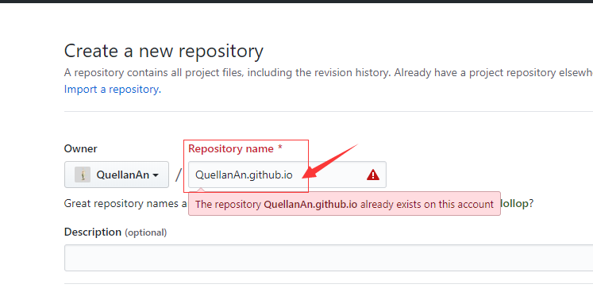 注册coding登录账号：https://coding.net/login
也是一样的，创建一个和名称相同的项目。这里说一下为什么要用coding，其实不用也可以，coding 和github 的作用一样的，都是作为pages 以及使用他们的域名。不同的是github 是国外的，而coding 是国内的。github搭建的博客不容易被百度检索到，而coding 可以。大家可以根据个人喜好选择吧。这里我是两个都用了，反正就多一条配置。配置秘钥
$ cd ~
$ ssh-keygen -t rsa -C "your_email@youremail.com"将生成的秘钥配置到github 和coding 上就好了
安装hexo
安装好git 和node 之后，安装hexo 就很方便
npm install hexo-cli -g随后我们创建一个blog 文件夹，用来存放我们的blog.
cd blog
hexo init
npm install这样基本的框架就已经搭建好了，可以启动看下效果
hexo clean //清缓存
hexo g //编译
hexo s //本地运行
hexo d // 上传到github 或者coding 主题选择
在搭建好框架之后，现在当然是找一个自己喜欢的主题啦，我个人比较喜欢next ,然后就在网上找了一个next 主题，功能配置基本都有了，我就是参照这个大佬的配置过来的。
配置：https://github.com/ipyker/hexo-next-theme
将这位大佬的主题下载下来后，放到我们自己的主题中去就好了。
常见的修改按照这位大佬提示的修改就可以。
保存源码
好了，主题和框架都有了，那接下来其实写博客发布就好了，其实前面的我前两年走到这里了，所以前面没有很细的讲。但是有一些基础的人应该都可以做到，如果不行，可以通过我提到的关键字搜索也可以在网上找到详细的教程。为什么这次又要重新搭建，因为之前没有保存源码，导致github 上只存了pages 的代码。没有保存源码，所以如果源码丢了就得重新搭建了。所以这次学聪明了知道保存源码，不管是换电脑还是什么的，做号备份就不怕了。
我这里讲源码保存在github 上，我们在github项目项目上创建一个分支 save，用来保存源码。master 分支用来pages页面展示。
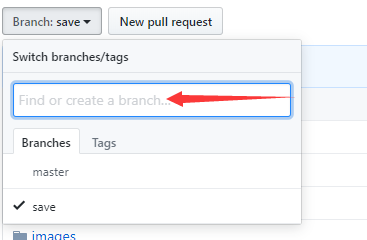
将创建的save 分支设置为默认分支。
然后在本地clone 项目。进入项目
git add .
git commit -m "your description"
git push origin save我们 _config.yml 配置是提交到 master 分支
deploy: type: git repository: github: git@github.com:QuellanAn/QuellanAn.github.io.git coding: git@git.dev.tencent.com:quellanan/QuellanAn.git branch: master
现在开始，之后的操作就简单了。想要编译发布就
hexo clean hexo g hexo d
保存到github就
git pull
git add .
git status
git commint -m "description"
git push origin save我博文的源码地址：https://github.com/QuellanAn/QuellanAn.github.io
这些都是我已经配置好了，你们可以直接clone下来，进入 blog 文件夹然后进行运行修改就可以了。所以我前面都讲的比较简单。
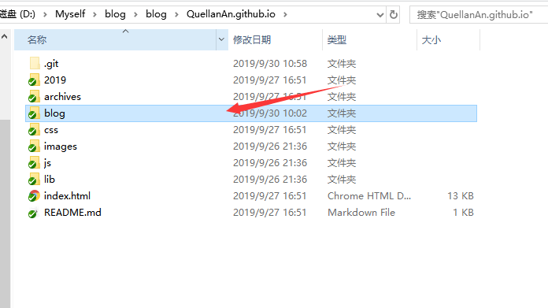
SEO
现在我们博客已经建好了，我们要新增博客的话在source / _posts 目录下增加就好了。
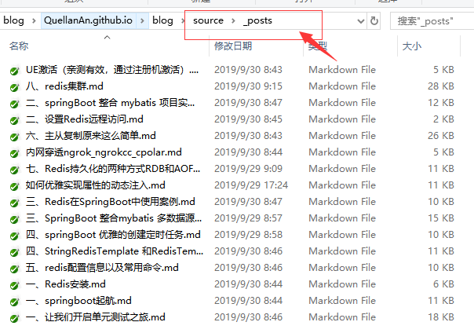
但是我们现在面临的一个问题是，我们的博客没有访问量怎么办，不能通过谷歌搜索和百度搜索搜索到，而是需要直接通过输入准确的网址进行访问，这样肯定是不利于我们增加博客浏览量的。所以我们需要将我们的网址添加到百度和谷歌搜索中。
谷歌：https://search.google.com/search-console
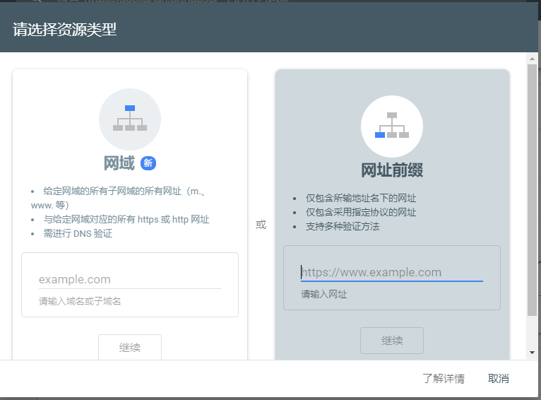
将下载的html 放到public 文件夹下。
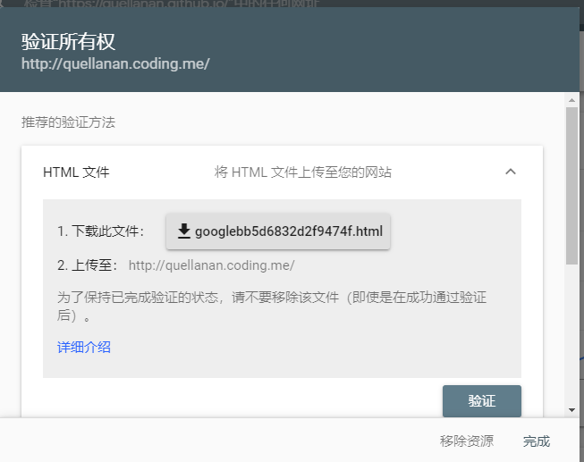
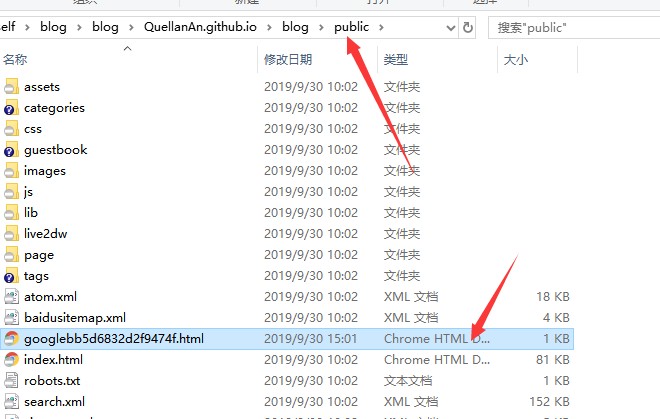
然后
hexo g
hexo d发布到我们的网站上。然后进行验证就可以验证通过。
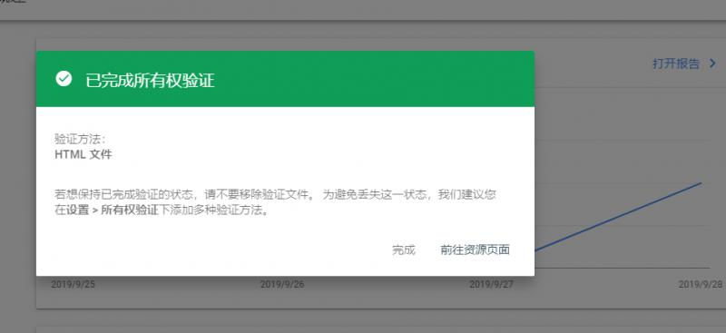
这个验证之后，我们再提交站点地图。站点地图我都配置好了，如果你们用我的模版的话，直接在网站站点地图提交就好了

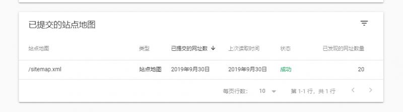
这样过段时间谷歌就能搜索到你的博客啦。
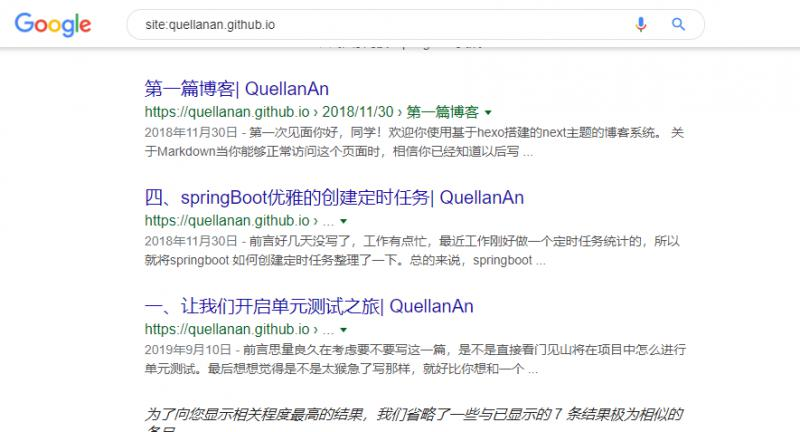
百度提交站点：https://ziyuan.baidu.com/site/index
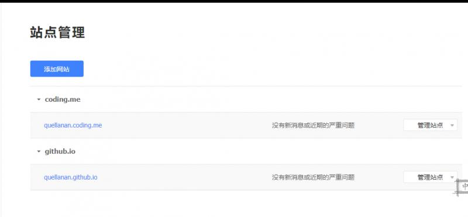
添加网站，验证方法和google 是一样的，都用html 文件验证就好了
验证完成之后，点击Robots,检测并更新。
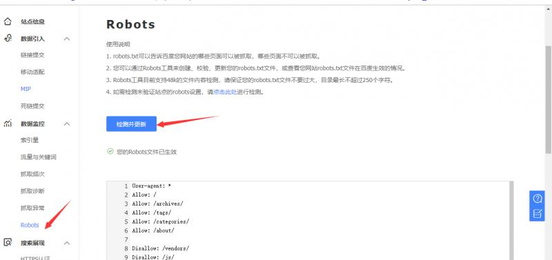
我的模版里面已经配置好了。可以直接检测到。

虽然我做了这些，但是好像百度还没有搜录，还得再等两天再看看。
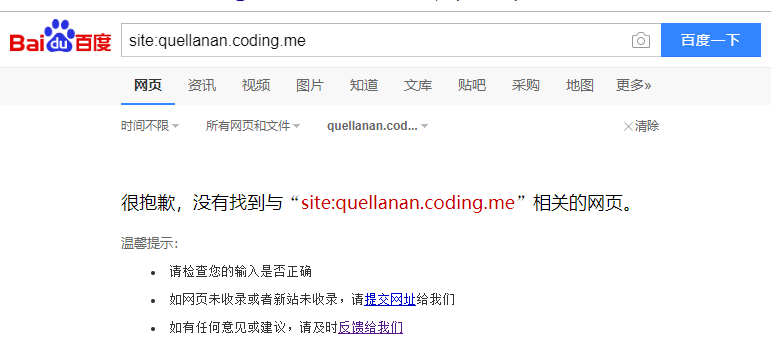
番外
好了，到此为止，个人博客搭建就到这这里了，大家如果也想要搭建一个自己的博客，可以把文中说的准备工作做好，然后自己下载我的源码来用，把信息修改成自己的就好了。有什么不懂了可以及时加我微信沟通。因为我模版里，我的博文原稿都在里面，所以各位用的时候记得删掉，或者记得标记为转载谢谢❤
可能讲的内容不够详细，没有细节没有讲到，对小白不太友好，但是考虑到其实网上有很多详细的教程，我这里就把我认为重要的讲了出来，希望对大家有帮助。
后续加油♡
欢迎大家关注个人公众号 "程序员爱酸奶"
分享各种学习资料，包含java，linux，大数据等。资料包含视频文档以及源码，同时分享本人及投递的优质技术博文。
如果大家喜欢记得关注和分享哟❤